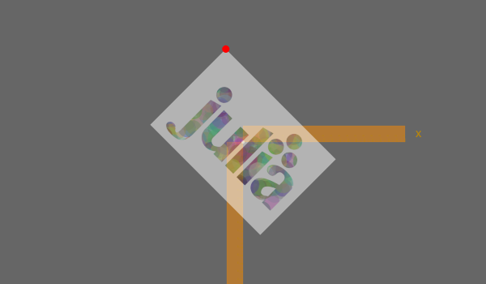
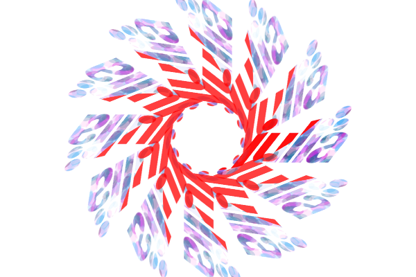
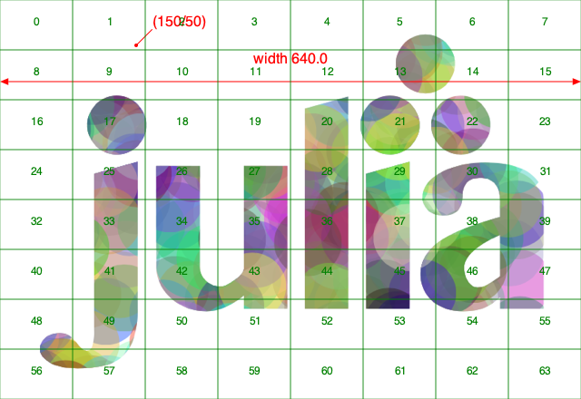
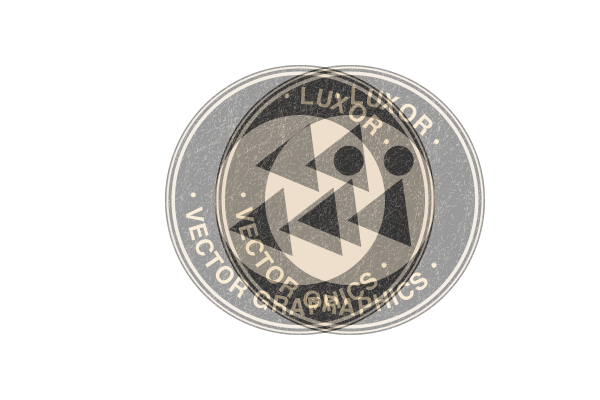

Images
Placing images
There is some limited support for placing PNG images on the drawing. First, load a PNG image using readpng(filename).
Then use placeimage() to place it by its top left corner at point x/y or pt. Access the image's dimensions with .width and .height.
img = readpng("assets/figures/julia-logo-mask.png")
w = img.width
h = img.height
axes()
scale(0.3, 0.3)
rotate(pi/4)
placeimage(img, -w/2, -h/2, .5)
sethue("red")
circle(-w/2, -h/2, 15, :fill)
Luxor.readpng — Function.readpng(pathname)Read a PNG file.
This returns a image object suitable for placing on the current drawing with placeimage(). You can access its width and height fields:
image = readpng("/tmp/test-image.png")
w = image.width
h = image.heightLuxor.placeimage — Function.placeimage(img, xpos, ypos)Place a PNG image on the drawing at (xpos/ypos). The image img has been previously loaded using readpng().
placeimage(img, pos)Place a PNG image on the drawing at pos.
placeimage(img, xpos, ypos, a)Place a PNG image on the drawing at (xpos/ypos) with transparency a.
placeimage(img, pos, a)Place a PNG image on the drawing at pos with transparency a.
Clipping images
You can clip images. The following script repeatedly places the image using a circle to define a clipping path:

using Luxor
width, height = 4000, 4000
margin = 500
fname = "/tmp/test-image.pdf"
Drawing(width, height, fname)
origin()
background("grey25")
setline(5)
sethue("green")
image = readpng(dirname(@__FILE__) * "assets/figures/julia-logo-mask.png")
w = image.width
h = image.height
pagetiles = Tiler(width, height, 7, 9)
tw = pagetiles.tilewidth/2
for (pos, n) in pagetiles
circle(pos, tw, :stroke)
circle(pos, tw, :clip)
gsave()
translate(pos)
scale(.95, .95)
rotate(rand(0.0:pi/8:2pi))
placeimage(image, -w/2, -h/2)
grestore()
clipreset()
end
finish()Transforming images
You can transform images by setting the current matrix, either with scale() and rotate() and similar, or by modifying it directly. This code skews the image and scales and rotates it in a circle:
img = readpng("assets/figures/clipping-tests.png")
w = img.width
h = img.height
for theta in 0:pi/6:2pi
gsave()
scale(.5, .5)
rotate(theta)
transform([1, 0, -pi/4, 1, 250, 0])
placeimage(img, -w/2, -h/2, .75)
grestore()
end
Drawing on images
You sometimes want to draw over images, for example to annotate them with text or vector graphics. The things to be aware of are mostly to do with coordinates and transforms.
In this example, we'll annotate a PNG file with some text and graphics.
image = readpng("assets/figures/julia-logo-mask.png")
w = image.width
h = image.height
# create a drawing surface of the same size
fname = "assets/figures/drawing_on_images.png"
Drawing(w, h, fname)
# place the image on the Drawing - it's positioned by its top/left corner
placeimage(image, 0, 0)
# now you can annotate the image. The (0/0) is at the top left.
sethue("red")
fontsize(20)
circle(5, 5, 2, :fill)
text("(5/5)", Point(25, 25), halign=:center)
arrow(Point(w/2, 50), Point(0, 50))
arrow(Point(w/2, 50), Point(w, 50))
text("width $w", Point(w/2, 70), halign=:center)
# to divide up the image into rectangular areas, temporarily position the axes at the center:
gsave()
setline(0.2)
sethue("green")
fontsize(12)
translate(w/2, h/2)
tiles = Tiler(w, h, 16, 10, margin=0)
for (pos, n) in tiles
box(pos, tiles.tilewidth, tiles.tileheight, :stroke)
text(string(n), pos, halign=:center)
end
grestore()
# If you want coordinates to be relative to the bottom left corner of the image, transform:
translate(0, h)
# and reflect in the x-axis
transform([1 0 0 -1 0 0])
# now 0/0 is at the bottom left corner, and 100/100 is up and to the right.
sethue("blue")
arrow(O, Point(100, 100))
# However, don't use text while flipped, because it's reversed:
text("I'm in reverse!", w/2, h/2)
Image compositing
You should be using Images.jl for most tasks involving image editing. But if you just need to composite images together, you can use the blending modes provided by setmode().
img = readpng("assets/figures/textcurvecenteredexample.png")
w = img.width
h = img.height
placeimage(img, -w/2, -h/2, .5)
setmode("saturate")
translate(50, 0)
placeimage(img, -w/2, -h/2, .5)